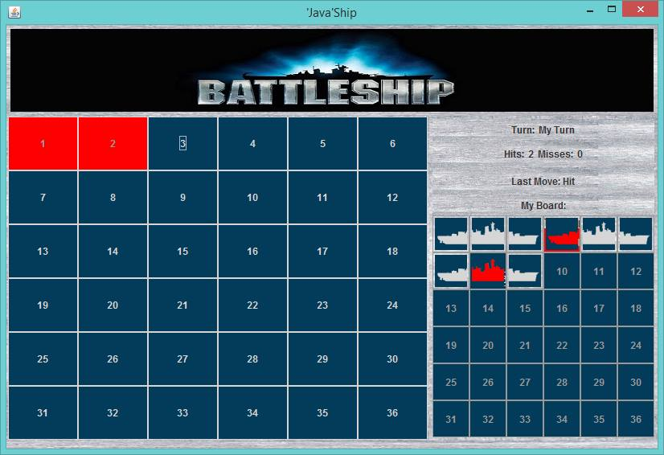

EECS 493 W15 Final Project
by Colin Jokisch and Austin Zimmer
For our project we designed and built a multiplayer environment for an already completed Battleship game. The project focused on creating a lobby for the game with user profiles, a high-score board, a chat window, and a match-making system for people to play each other. The game was built with Java and utilizes a mySQL database.
The game itself is your classic good old Battleship except a little simplier. In this game you only get 3 ships of length 3 to encourage quick and fun games. The gameplay is alternating turns till one player sinks all the other players ships. The game is multiplayer only.
When the user opens the game they will come to the login screen. The user can login from an existing account or create a new account.
If it is the users first time playing they will have to make a new account. They will see this screen after selecting to create a new acount on the first page. The boxes on the right give the requirements for the username and the password. Once the user creates a username and password that meets the requirements the box will turn green. In this image you can see the user has a valid username, but not a valid password.
Once the user has met all requirements their screen will look like this.
After login the user will arrive at their profile screen. The user can navigate to other pages by using the tabs at the top of the screen. In the profile the user can view their public information. The chat box will also open in public mode and the user will be able to communicate with all other players in the lobby
The chat window has two modes. These modes are public and private mode. If you are in the game lobby you will be in public mode and able to communicate with everyone else in the lobby. If you are in a game you will be in private mode and only able to communicate with your opponent. The messages have three colors. Yellow is from the system. Red is from another user. Blue is you.
To reach the profile edit screen the user just clicks on the edit button on their profile. Here you can, as I bet you guessed, edit your profile. The user can even upload their own profile picture from their computer!
In the highscores tab the user can see all other players stats and sort them by column by clicking on each column header. They can also search for individual players.
In the lobby the user can see all other players currently also in the lobby. They are able to challenge any other player to a game by clicking on them and hitting the challenge button. The other user can then either accept or decline the game. If they accept they will leave the lobby and enter the game.
Once a game begins the users will have to place their ships. They do that here following the directions specified at the top of the screen and input the locations in the textboxes by giving the grid coordinates of each ship.

After the user places their ships the game will begin. The left side of the screen is where the user attempts to target their opponent's ships by clicking on a grid panel. The right side of the screen shows the users grid and where the opponent has targeted and hit. The game will continue back and forth until one player has sank all the other player's ships. Then the game will alert the winner and loser and send them back to the game lobby.